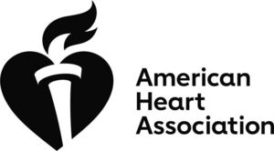

Trade Mark Journal No.2025/025 20 June 2025
WO0000001846415 (9,16,35,41,42,44)
Office of origin: United States of America
Date of International Registration:27 September 2024
Date of designation in the UK:
27 September 2024

The mark consists of a heart with a torch with a flame to the left of the stacked words "AMERICAN HEART ASSOCIATION".
- Class 9
- Downloadable electronic newsletters, e-books, journals, educational course materials, documents in the nature of manuals, posters, documents in the nature of informational flyers, diagrams, documents in the nature of recipe cards, documents in the nature of cookbooks, podcasts, and webcasts in the fields of health, cardiovascular health, fitness, nutrition, and prevention, reduction, or treatment of cardiac events, heart failure, aortic stenosis, hypertension, diabetes, peripheral artery disease, vascular disease, cholesterol, cardiovascular disease, and stroke; prerecorded DVDs and USB drives featuring educational videos and instruction on first aid, CPR, and life support; downloadable educational computer software for providing instruction in and testing knowledge and skills in the field of cardiovascular health, fitness, nutrition, and/or prevention or reduction or cardiovascular disease and stroke.
- Class 16
- Printed publications in the nature of leaflets, newsletters, educational course materials, journals, manuals, brochures, booklets, books, pamphlets, informational flyers, wallet cards of the Regulations), research monographs, journal reprints, charts, and diagrams featuring information on health, cardiovascular health, fitness, nutrition, and prevention, reduction, or treatment of cardiac events, heart failure, aortic stenosis, hypertension, diabetes, peripheral artery disease, vascular disease, cholesterol, cardiovascular disease, and stroke; printed posters; stickers; printed cookbooks.
- Class 35
- Economics information related to economic growth, food stabilization, and social benefits in communities provided via a website.
- Class 41
- Educational services, namely, providing online, video, and in-person classes, conferences, and scientific session seminars, conducting lectures, webinars, seminars, and workshops in the fields of health, cardiovascular health, fitness, nutrition, and prevention, reduction, or treatment of cardiac events, heart failure, aortic stenosis, hypertension, diabetes, peripheral artery disease, vascular disease, cholesterol, cardiovascular disease, and stroke; organizing and conducting events in the fields of health, cardiovascular health, fitness, nutrition, and prevention, reduction or treatment of cardiac events, heart failure, aortic stenosis, hypertension, diabetes, peripheral artery disease, vascular disease, cholesterol, cardiovascular disease, and stroke for educational purposes; organizing and conducting community walking, fitness, nutrition, and healthy living events for educational purposes; non-downloadable videos featuring information on health, cardiovascular health, fitness, nutrition, and prevention, reduction, or treatment of cardiac events, heart failure, aortic stenosis, hypertension, diabetes, peripheral artery disease, vascular disease, cholesterol, cardiovascular disease, and stroke provided via a website; production and distribution of videos, podcasts, and webcasts in the fields of health, cardiovascular health, fitness, nutrition, and prevention, reduction, or treatment of cardiac events, heart failure, aortic stenosis, hypertension, diabetes, peripheral artery disease, vascular disease, cholesterol, cardiovascular disease, and stroke; educational and entertainment services, namely, a continuing program about fitness, nutrition, health, cardiovascular health, and prevention, reduction, or treatment of cardiac events, heart failure, aortic stenosis, hypertension, diabetes, peripheral artery disease, vascular disease, cholesterol, cardiovascular disease, heart failure, and stroke accessible by means of television, radio, mobile phone based applications and web based applications; entertainment and amusement, namely, provision of online non-downloadable virtual goods in the nature of health and wellness products being first aid products, nutritional supplements, vitamins, probiotics, over-the-counter medications, prescription medications, beauty care products, personal care products, personal hygiene products, feminine hygiene products, thermometers, and exercise equipment, smoking-cessation products, cookbooks, recipes, fitness programs, nutritional programs, weight management products, diabetes diagnostic and management products, blood pressure diagnostic and management products, foods, and beverages, clothing, avatars, emojis, icons being artwork, capes, fitness and exercise equipment, kitchenware, kitchen appliances, fitness tracking equipment, health monitoring equipment, and general merchandise being housewares, home décor, food, beverages, cleaning products, toys, sporting goods, apparel, footwear, headwear, office supplies, stationary products, arts and crafts supplies, holiday and party supplies, and pet products for use in virtual environments created for entertainment purposes; entertainment services, namely, providing on-line, non-downloadable virtual goods, namely health and wellness products being first aid products, nutritional supplements, vitamins, probiotics, over-the-counter medications, prescription medications, beauty care products, personal care products, personal hygiene products, feminine hygiene products, thermometers, and exercise equipment, smoking-cessation products, cookbooks, recipes, fitness programs, nutritional programs, weight management products, diabetes diagnostic and management products, blood pressure diagnostic and management products, foods, and beverages, clothing, avatars, emojis, icons being artwork, capes, fitness and exercise equipment, kitchenware, kitchen appliances, fitness tracking equipment, health monitoring equipment, and general merchandise being housewares, home décor, food, beverages, cleaning products, toys, sporting goods, apparel, footwear, headwear, office supplies, stationary products, arts and crafts supplies, holiday and party supplies, and pet products for use online and in online virtual worlds created for entertainment purposes; education information related to educational opportunities in the fields of economic growth, food stabilization, improved health, health equity, and social benefits in communities provided via a website; providing non-downloadable videos via a website featuring information on health, cardiovascular health, nutrition, and prevention, reduction, or treatment of cardiac events, heart failure, aortic stenosis, hypertension, diabetes, peripheral artery disease, vascular disease, cholesterol, cardiovascular disease, and stroke.
- Class 42
- Developing quality control standards in the fields of the treatment and prevention of cardiac events, heart failure, cardiovascular disease, stroke; developing quality control standards in the fields of home health care, hospice care, senior living, and senior health care; providing an interactive web site featuring technology that enables healthcare providers to enter, access, track, monitor and generate health and medical information and reports related to the treatment and prevention of cardiac events, heart failure, cardiovascular disease, stroke, cardio-pulmonary resuscitation; providing an interactive web site featuring technology that enables healthcare providers to enter, access, track, monitor and generate health and medical information and reports related home health care, hospice care, senior living, and senior health care; providing temporary use of online, non-downloadable interactive assessment and reporting software for use in providing patient-specific treatment guidelines and information and tracking adherence to guidelines and standards in the fields of treatment and prevention of cardiac events, heart failure, cardiovascular disease, stroke, cardio-pulmonary resuscitation; providing temporary use of online, non-downloadable interactive assessment and reporting software for use in providing patient-specific treatment guidelines and information and tracking adherence to guidelines and standards in the fields of home health care, hospice care, senior living, and senior health care and for quality of care reviews; development and establishment of specifications and procedures for the healthcare industry related to treatment and prevention of cardiac events, heart failure, cardiovascular disease, stroke, cardio-pulmonary resuscitation; development and establishment of specifications and procedures for the healthcare industry related to home health care, hospice care, senior living, and senior health care to improve healthcare quality; quality management services, namely, quality evaluation and analysis, in the fields of treatment and prevention of cardiac events, heart failure, cardiovascular diseases, stroke, cardio-pulmonary resuscitation and related to home health care, hospice care, senior living, and senior health care; providing an online non-downloadable computer software platform for users to browse, create, modify and manipulate virtual retail goods, namely health and wellness products, smoking-cessation products, cookbooks, recipes, fitness programs, nutritional programs, weight management products, diabetes diagnostic and management products, blood pressure diagnostic and management products, foods, beverages, clothing, avatars, emojis, icons, capes, fitness and exercise equipment, kitchenware, kitchen appliances, fitness tracking equipment, health monitoring equipment, and general merchandise for entertainment purposes.
- Class 44
- Information in the fields of health, namely, cardiovascular health, nutrition, and prevention, reduction, or treatment of cardiac events, heart failure, aortic stenosis, hypertension, diabetes, peripheral artery disease, vascular disease, cholesterol, cardiovascular disease, and stroke provided via a website; health information in the fields of improved health and health equity provided via a website; providing health information via a website related to the fields of health, cardiovascular health, fitness, nutrition, and prevention, reduction, or treatment of cardiac events, heart failure, aortic stenosis, hypertension, diabetes, peripheral artery disease, vascular disease, cholesterol, cardiovascular disease, and stroke.
American Heart Association, Inc.
Representative: FRKelly, 4 Mount Charles Belfast BT7 1NZ UNITED KINGDOM